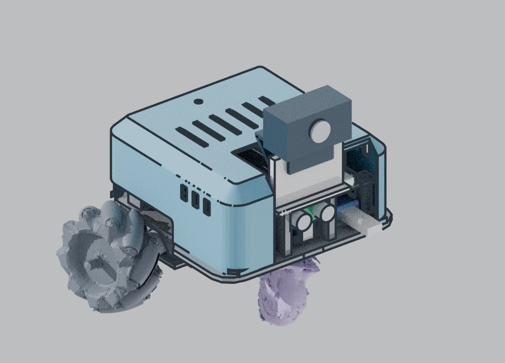
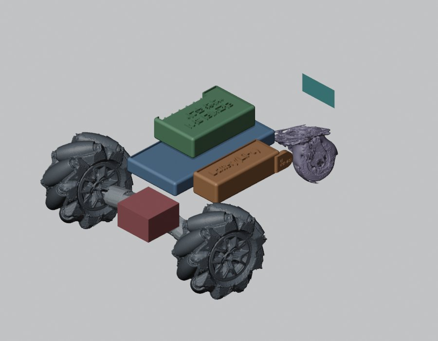
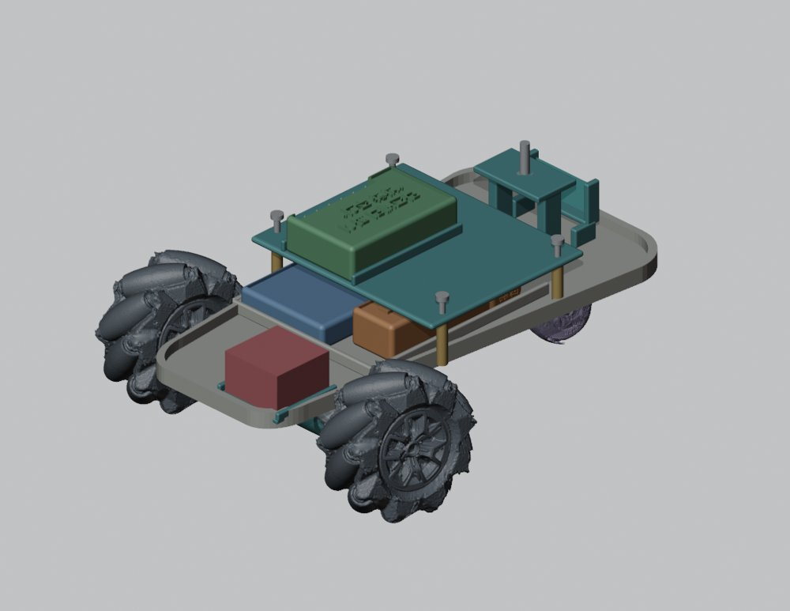
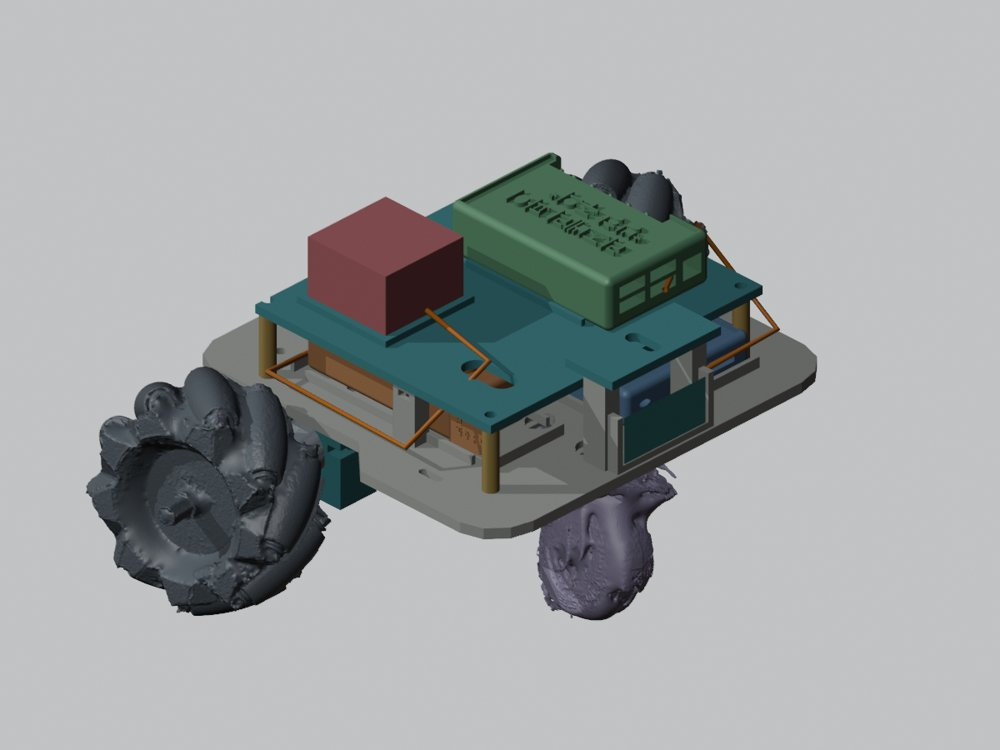
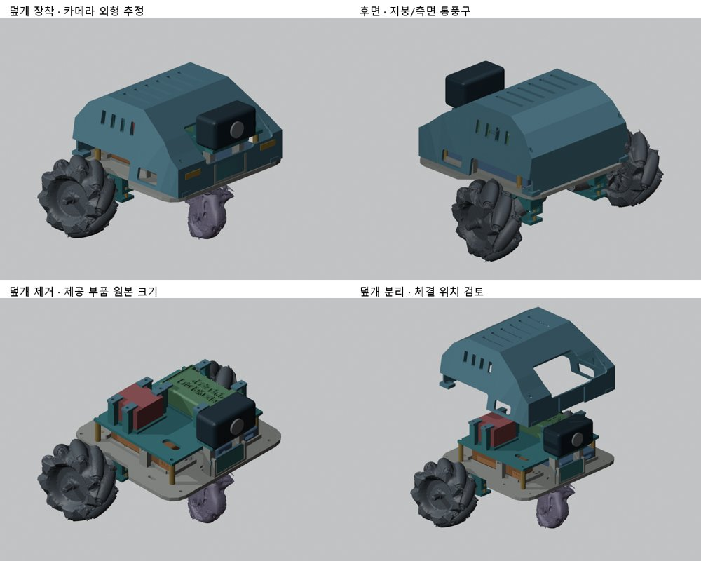
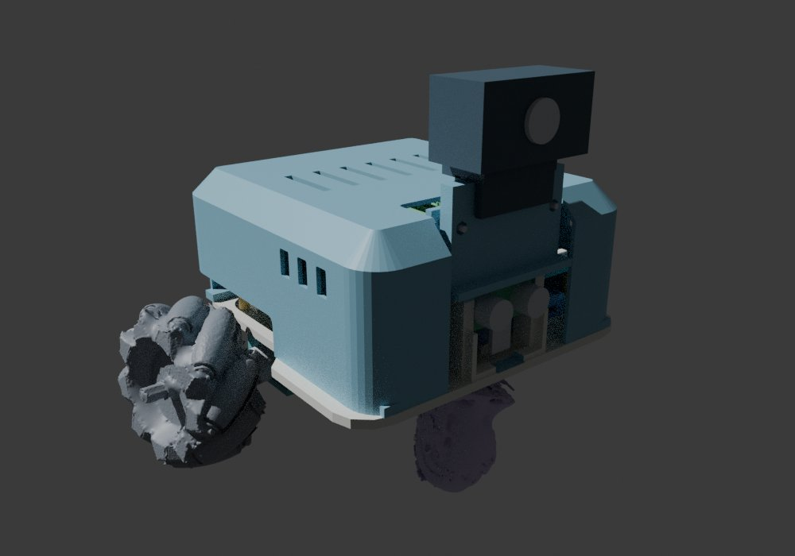
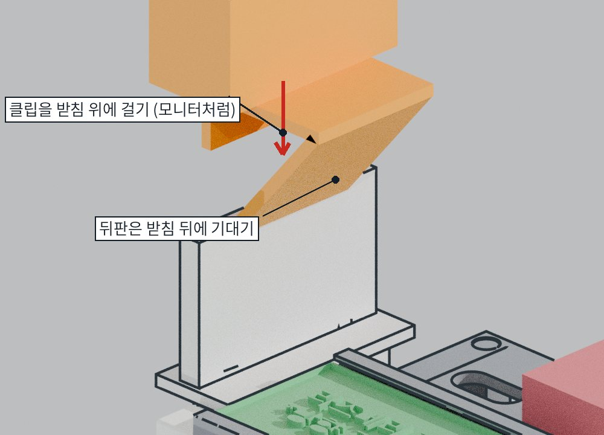
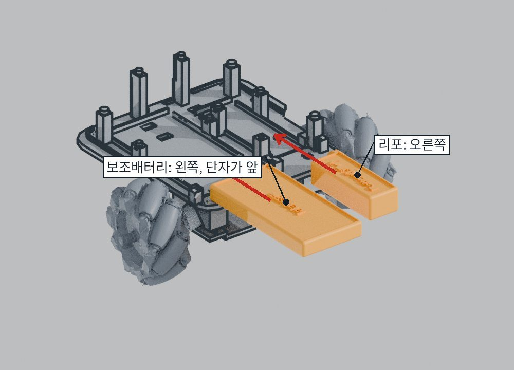
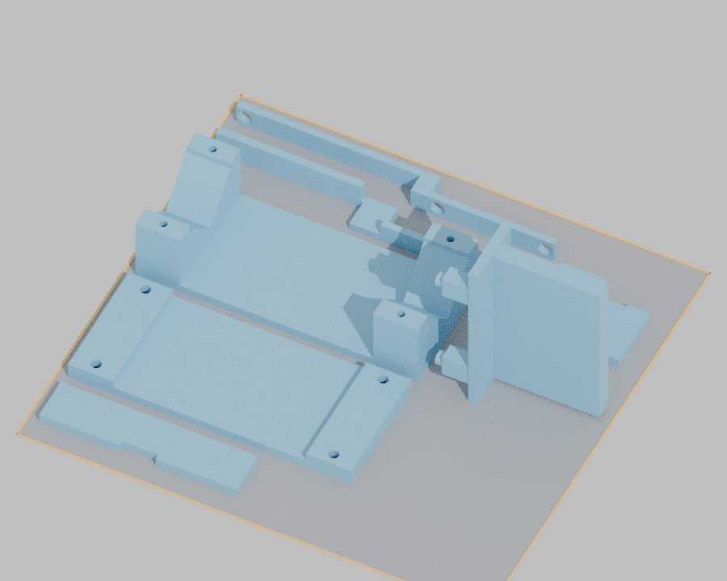

<title>AI 활용 발표</title>
<meta name="claude:viewport-fit-sides" content="cover">
<link rel="preconnect" href="https://fonts.googleapis.com">
<link rel="stylesheet" href="https://fonts.googleapis.com/css2?family=IBM+Plex+Sans+KR:wght@400;500;700&family=IBM+Plex+Mono:wght@400;500&display=swap">
<style>

/* Layout: workshop manual — single reading column, figures beside steps, A/B parts colour-coded */
:root{
  --bg:#f5f7f8; --panel:#ffffff; --fg:#1b2429; --muted:#5b6a73; --line:#d5dde2;
  --accent:#23688a; --a-part:#7a5a1c; --a-bg:#f6efe0; --b-part:#23688a; --b-bg:#e3f0f6;
  --ok:#2c7a4b; --warn:#a86408; --bad:#b23b2e;
  --sans:"IBM Plex Sans KR",system-ui,"Apple SD Gothic Neo","Malgun Gothic",sans-serif;
  --mono:"IBM Plex Mono",ui-monospace,Menlo,Consolas,monospace;
}
@media (prefers-color-scheme:dark){:root:not([data-theme="light"]){
  --bg:#12181b; --panel:#1a2226; --fg:#e3eaee; --muted:#9aaab3; --line:#2c383e;
  --accent:#6bb3d6; --a-part:#e0bd77; --a-bg:#2b2416; --b-part:#6bb3d6; --b-bg:#16303c;
  --ok:#62c48a; --warn:#e3a54a; --bad:#ef7a6c; color-scheme:dark}}
:root[data-theme="dark"]{
  --bg:#12181b; --panel:#1a2226; --fg:#e3eaee; --muted:#9aaab3; --line:#2c383e;
  --accent:#6bb3d6; --a-part:#e0bd77; --a-bg:#2b2416; --b-part:#6bb3d6; --b-bg:#16303c;
  --ok:#62c48a; --warn:#e3a54a; --bad:#ef7a6c; color-scheme:dark}

*{box-sizing:border-box}
html{scroll-snap-type:y mandatory}
body{background:var(--bg);color:var(--fg);font:16px/1.6 var(--sans);margin:0}
.slide{scroll-snap-align:start;min-height:100vh;display:flex;align-items:center;justify-content:center;padding:28px max(16px,env(safe-area-inset-left,0px))}
.card{width:min(1180px,100%);aspect-ratio:16/9;background:var(--panel);border:1px solid var(--line);border-radius:10px;padding:clamp(20px,3.6vw,52px);display:flex;flex-direction:column;gap:clamp(10px,1.6vw,22px);position:relative;overflow:hidden}
@media (max-width:820px),(max-aspect-ratio:1/1){.card{aspect-ratio:auto}}
.no{position:absolute;right:22px;bottom:14px;font:12px var(--mono);color:var(--muted)}
.kick{font:500 13px var(--mono);color:var(--accent);letter-spacing:.06em}
h1{font-size:clamp(1.8rem,4vw,3rem);line-height:1.2;margin:0;text-wrap:balance}
h2{font-size:clamp(1.3rem,2.6vw,2rem);line-height:1.25;margin:0;text-wrap:balance}
p{margin:0}
.lead{color:var(--muted);font-size:clamp(1rem,1.6vw,1.25rem)}
.two{display:grid;grid-template-columns:1fr 1fr;gap:clamp(14px,2.4vw,32px);flex:1;min-height:0;align-items:center}
.two.w{grid-template-columns:1.25fr 1fr}
@media (max-width:820px){.two,.two.w{grid-template-columns:1fr}}
img{max-width:100%;display:block;border-radius:6px;border:1px solid var(--line)}
.fill{width:100%;height:100%;max-height:52vh;object-fit:contain;background:#c9cdd1}
ul.b{margin:0;padding-left:22px;font-size:clamp(1.05rem,1.9vw,1.45rem)} ul.b li{margin:10px 0}
.who{display:grid;grid-template-columns:repeat(3,1fr);gap:14px;flex:1}
@media (max-width:820px){.who{grid-template-columns:1fr}}
.who>div{border:1px solid var(--line);border-radius:8px;padding:16px;display:flex;flex-direction:column;gap:8px;min-width:0}
.who h3{margin:0;font-size:1.3rem} .who .d{font:12px var(--mono);color:var(--muted)}
.who ul{margin:0;padding-left:18px;font-size:clamp(.95rem,1.5vw,1.15rem)} .who li{margin:6px 0}
.who .me{border-color:var(--accent);background:var(--b-bg)}
.tl{display:grid;grid-template-columns:repeat(6,1fr);gap:10px;flex:1;align-content:center}
@media (max-width:820px){.tl{grid-template-columns:repeat(2,1fr)}}
.tl figure{margin:0;display:flex;flex-direction:column;gap:6px;min-width:0}
.tl img{aspect-ratio:4/3;object-fit:cover;width:100%;background:#c9cdd1}
.tl b{font:700 13px var(--mono);color:var(--accent)} .tl span{font-size:14px;color:var(--muted);line-height:1.4}
.loop{display:flex;gap:10px;align-items:stretch;flex-wrap:wrap}
.loop div{flex:1 1 150px;border:1px solid var(--line);border-radius:8px;padding:14px;min-width:0}
.loop b{display:block;font-size:1.35rem} .loop span{color:var(--muted);font-size:1.05rem}
.loop .ar{flex:0 0 auto;border:0;padding:0;align-self:center;color:var(--accent);font-size:1.4rem}
table{border-collapse:collapse;width:100%;font-size:clamp(.9rem,1.5vw,1.15rem)}
th,td{text-align:left;padding:8px 10px;border-bottom:1px solid var(--line);vertical-align:top}
th{font-size:12.5px;color:var(--muted);font-weight:700}
.num{font-variant-numeric:tabular-nums;font-weight:700;color:var(--ok);white-space:nowrap}
.tw{overflow-x:auto}
.kpi{display:grid;grid-template-columns:repeat(4,1fr);gap:12px}
@media (max-width:820px){.kpi{grid-template-columns:repeat(2,1fr)}}
.kpi div{border:1px solid var(--line);border-radius:8px;padding:12px 14px}
.kpi b{display:block;font:700 clamp(1.3rem,2.6vw,2rem) var(--sans);font-variant-numeric:tabular-nums}
.kpi span{font-size:13px;color:var(--muted)}
.tag{display:inline-block;font:500 12px var(--mono);padding:1px 8px;border-radius:10px;border:1px solid currentColor;margin-right:6px}
.t-me{color:var(--accent)} .t-ai{color:var(--warn)}
.q{border-left:4px solid var(--accent);padding:6px 0 6px 16px;font-size:clamp(1.1rem,2vw,1.5rem);font-weight:500}
nav.dots{position:fixed;right:10px;top:50%;transform:translateY(-50%);display:flex;flex-direction:column;gap:8px;z-index:2}
nav.dots a{width:9px;height:9px;border-radius:50%;background:var(--line);display:block}
nav.dots a.on{background:var(--accent)}
@media (max-width:820px){nav.dots{display:none}}
@media print{html{scroll-snap-type:none}.slide{min-height:auto;page-break-after:always;padding:0}nav.dots{display:none}}
</style>
<nav class="dots" aria-label="슬라이드"></nav>

<section class="slide"><div class="card">
  <p class="kick">사물인터넷 자율주행 · 몸체 설계</p>
  <div class="two w">
    <div style="display:flex;flex-direction:column;gap:18px">
      <h1>AI와 함께 만든<br>자율주행차 몸체</h1>
      <p class="lead">AI는 만들고 계산했다.<br>나는 정하고, 실물과 맞춰 보고, 골랐다.</p>
      <p class="meta" style="font:13px var(--mono);color:var(--muted)">2026.10.28 – 10.30 · 작업 기록 34건</p>
    </div>
    
  </div><span class="no">1</span></div></section>

<section class="slide"><div class="card">
  <p class="kick">01 과제</p>
  <h2>수업 키트 부품을 담는 몸체를 3D 출력으로</h2>
  <div class="two">
    <ul class="b">
      <li>라즈베리파이, 모터 드라이버, 모터 2개, 메카넘 휠, 캐스터</li>
      <li>배터리 2개 (리포 + 보조배터리), 초음파 센서, 웹캠</li>
      <li>프린터: 신도리코 3DWOX 1 (출력판 210×200mm), PLA</li>
    </ul>
    <div>
      <p style="font-weight:700;margin-bottom:8px">내가 정한 조건</p>
      <ul class="b">
        <li>잘 달리는 것이 먼저</li>
        <li>배터리 충전·교체가 쉬울 것</li>
        <li>키트 볼트만 사용. 테이프·접착제 없음</li>
        <li>부러지기 쉬운 가는 핀 없음</li>
        <li>부품 수는 적게, 조립은 쉽게</li>
      </ul>
    </div>
  </div><span class="no">2</span></div></section>

<section class="slide"><div class="card">
  <p class="kick">02 역할 나누기</p>
  <h2>AI 두 개 + 나</h2>
  <div class="who">
    <div><h3>ChatGPT (Codex)</h3><p class="d">10/28–29 · 기록 1–23</p>
      <ul><li>수업 자료·부품 목록 정리</li><li>부품 치수 조사</li><li>배치 → 구조 → 통합 설계 (v1–v4.2)</li><li>작업 기록 규칙 만들기</li><li>GitHub 업로드</li></ul></div>
    <div><h3>Claude</h3><p class="d">10/29–30 · 기록 24–34</p>
      <ul><li>기록을 읽고 이어받기</li><li>v4.3 → v6.3 수정</li><li>간섭·조립 검사</li><li>그림 조립설명서, 출력 가이드</li><li>폴더 정리</li></ul></div>
    <div class="me"><h3>나</h3><p class="d">처음부터 끝까지</p>
      <ul><li>목표와 조건 결정</li><li>실물 사진·스캔으로 확인</li><li>이상한 곳 지적</li><li>여러 안 중에서 선택</li><li>삭제·업로드 승인</li></ul></div>
  </div><span class="no">3</span></div></section>

<section class="slide"><div class="card">
  <p class="kick">03 진행 과정</p>
  <h2>3일, 6번 크게 바뀜</h2>
  <div class="tl">
    <figure><b>v1</b><span>부품 배치만</span></figure>
    <figure><b>v2</b><span>둥근 몸체 첫 구조</span></figure>
    <figure><b>v3</b><span>한 장 바닥판, 원본 크기로</span></figure>
    <figure><b>v4</b><span>덮개·카메라·배터리 통합</span></figure>
    <figure><b>v5</b><span>들어 올리는 덮개</span></figure>
    <figure><b>v6.3</b><span>부품 10개, 키트 볼트만</span></figure>
  </div><span class="no">4</span></div></section>

<section class="slide"><div class="card">
  <p class="kick">04 일하는 방식</p>
  <h2>모든 수정은 발견 → 조치 → 결과</h2>
  <div class="loop" style="margin-top:auto">
    <div><b>발견</b><span>내가 보거나, AI가 검사해서 찾음</span></div><div class="ar">→</div>
    <div><b>조치</b><span>AI가 수정안을 만들고 모델 수정</span></div><div class="ar">→</div>
    <div><b>결과</b><span>숫자로 확인 (간섭, 서포트, 부품 수)</span></div><div class="ar">→</div>
    <div><b>기록</b><span>AI 몫 · 내 판단 · 검증을 나눠 적음</span></div>
  </div>
  <p class="q" style="margin-bottom:auto">기록이 있어서 다른 AI로 옮겨도 바로 이어서 작업할 수 있었다.</p><span class="no">5</span></div></section>

<section class="slide"><div class="card">
  <p class="kick">05 대표 사례</p>
  <h2>숫자로 본 개선</h2>
  <div class="tw"><table>
    <thead><tr><th>발견</th><th>조치</th><th>결과</th></tr></thead>
    <tbody>
    <tr><td>덮개 출력이 어렵고 충전도 불편 <span class="tag t-me">나</span></td><td>지붕이 평평한 들어 올림 덮개</td><td class="num">서포트 131 → 8cm²</td></tr>
    <tr><td>배터리 뺄 때 볼트 4개 <span class="tag t-me">나</span></td><td>위에서 꽂는 잠금판</td><td class="num">볼트 4 → 0개</td></tr>
    <tr><td>작은 출력 부품이 너무 많음 <span class="tag t-me">나</span></td><td>지지대·고정편을 출력 기둥·레일로</td><td class="num">부품 21 → 10개</td></tr>
    <tr><td>선반 아래 보강대 때문에 판이 공중에 뜸 <span class="tag t-ai">AI</span></td><td>보강대 제거 (무게 약 200g)</td><td class="num">서포트 179 → 2cm²</td></tr>
    <tr><td>보조배터리를 뺄 때 덮개 다리에 걸림 <span class="tag t-ai">AI</span></td><td>다리 2mm 줄임</td><td class="num">걸림 0건</td></tr>
    <tr><td>주행 중 덮개가 들릴 수 있음 <span class="tag t-me">나</span></td><td>기둥 연장, M6 볼트 1개</td><td class="num">들어 올림 걸림 0건</td></tr>
    </tbody></table></div>
  <p style="font-size:13px;color:var(--muted)"><span class="tag t-me">나</span>내가 발견 <span class="tag t-ai">AI</span>AI 검사로 발견</p><span class="no">6</span></div></section>

<section class="slide"><div class="card">
  <p class="kick">06 AI가 틀린 것</p>
  <h2>AI 결과를 그대로 믿지 않았다</h2>
  <div class="two w">
    <div class="tw"><table>
      <thead><tr><th>AI가 추정한 것</th><th>바로잡은 방법</th></tr></thead>
      <tbody>
      <tr><td>카메라 뒤 클립을 빠뜨림</td><td>카메라 사진을 다시 줌 → 받침 재설계</td></tr>
      <tr><td>웹캠 클립이 짧다고 가정</td><td>실물 사진: 위판이 길고 뒤판이 비스듬 → 모니터 걸이식으로</td></tr>
      <tr><td>캐스터 구멍 38×28mm</td><td>스캔의 구멍을 짚어 줌 → 54×24mm로</td></tr>
      <tr><td>의미 없는 구멍, 떠 있는 덩어리</td><td>모델을 하나씩 보며 지적 → 처음부터 다시 모델링</td></tr>
      <tr><td>설명서 글이 길고 그림이 없음</td><td>“짧게, 그림으로” → 단계별 그림 설명서</td></tr>
      </tbody></table></div>
    
  </div><span class="no">7</span></div></section>

<section class="slide"><div class="card">
  <p class="kick">07 검증</p>
  <h2>출력하기 전에 모델로 먼저 조립</h2>
  <div class="two">
    <ul class="b">
      <li><b>가상 조립</b>: 설명서 순서대로 2mm씩 끼우며 검사 → 15단계 막힘 없음</li>
      <li><b>충전 동선</b>: 배터리 2개 빼는 길 걸림 0건</li>
      <li><b>덮개</b>: 0–130mm 들어 올리며 걸림 0건</li>
      <li><b>공구</b>: 볼트 위아래 120mm에 막는 부품 없음</li>
      <li><b>출력</b>: 출력판 크기, 서포트 면적, 깨진 면 0</li>
    </ul>
    
  </div><span class="no">8</span></div></section>

<section class="slide"><div class="card">
  <p class="kick">08 결과물</p>
  <h2>바로 출력하고 조립할 수 있는 상태</h2>
  <div class="kpi">
    <div><b>10개</b><span>출력 부품</span></div>
    <div><b>약 36시간</b><span>출력 예상 (4번)</span></div>
    <div><b>1개</b><span>충전 때 푸는 볼트</span></div>
    <div><b>34건</b><span>작업 기록</span></div>
  </div>
  <div class="two">
    
    <ul class="b">
      <li>출력 파일 10개 (방향까지 맞춤)</li>
      <li>출력 가이드: 순서·시간·설정</li>
      <li>그림 조립설명서: 단계별 그림</li>
      <li>날짜별 과거 기록 + 최신 모델</li>
    </ul>
  </div><span class="no">9</span></div></section>

<section class="slide"><div class="card">
  <p class="kick">09 남은 일</p>
  <h2>모델에서는 확인, 실물은 아직</h2>
  <div class="two">
    <ul class="b">
      <li>웹캠 클립 실측 (위판·뒤판 길이, 폭)</li>
      <li>실제 출력 후 끼워 보기</li>
      <li>출력물에 직접 박는 볼트가 버티는지</li>
      <li>차 폭 283mm vs 도로 폭 300mm: 주행 시험</li>
    </ul>
    <p class="q">계획: 작은 부품 먼저 출력 → 끼워 보기 → 큰 부품</p>
  </div><span class="no">10</span></div></section>

<section class="slide"><div class="card">
  <p class="kick">10 배운 점</p>
  <h2>AI는 빠르지만, 기준은 사람이 잡는다</h2>
  <ul class="b">
    <li>AI는 안을 빨리 많이 만들고, 검사를 꼼꼼히 해 준다</li>
    <li>하지만 실물을 모르면 그럴듯하게 틀린다 → 사진·실측으로 확인해야 한다</li>
    <li>“잘 달리게, 충전 쉽게” 같은 우선순위는 내가 정해야 결과가 좋아졌다</li>
    <li>발견 → 조치 → 결과 기록 덕분에 도구를 바꿔도 이어서 일할 수 있었다</li>
  </ul>
  <p class="lead" style="margin-top:auto">감사합니다</p><span class="no">11</span></div></section>

<script>
(function(){
  var s=[].slice.call(document.querySelectorAll('.slide')),nav=document.querySelector('nav.dots');
  s.forEach(function(el,i){el.id='s'+(i+1);var a=document.createElement('a');a.href='#s'+(i+1);a.setAttribute('aria-label',(i+1)+'번 슬라이드');nav.appendChild(a);});
  var dots=nav.querySelectorAll('a');
  var io=new IntersectionObserver(function(es){es.forEach(function(e){if(e.isIntersecting){var i=s.indexOf(e.target);dots.forEach(function(d,j){d.classList.toggle('on',j===i)})}})},{threshold:.6});
  s.forEach(function(el){io.observe(el)});
  function cur(){var y=window.scrollY+innerHeight/2;for(var i=0;i<s.length;i++){if(s[i].offsetTop+s[i].offsetHeight>y)return i}return s.length-1}
  addEventListener('keydown',function(e){var k=e.key,i=cur();
    if(k==='ArrowDown'||k==='ArrowRight'||k==='PageDown'||k===' '){e.preventDefault();s[Math.min(i+1,s.length-1)].scrollIntoView({behavior:'smooth'})}
    if(k==='ArrowUp'||k==='ArrowLeft'||k==='PageUp'){e.preventDefault();s[Math.max(i-1,0)].scrollIntoView({behavior:'smooth'})}});
})();
</script>
